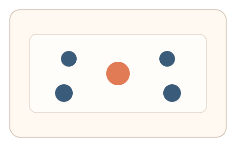
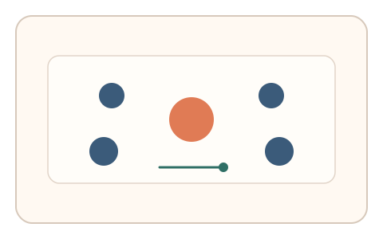
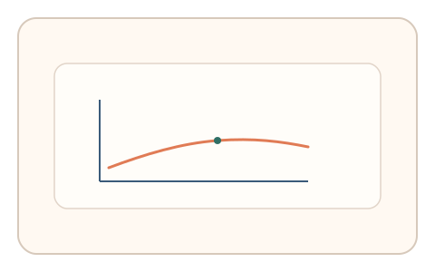

#54
视觉思考范式：扫描/错觉/全局-局部
已扩展
大小错觉校准
在 Ebbinghaus 错觉场景中调节中心圆大小，利用偏移量与调整路径验证真实性。
概念原文
中心圆被不同大小的环绕圆包围，用户调节中心圆大小直到“看起来一样大”；记录偏移量与调整路径。
利用 Ebbinghaus 错觉的系统性偏差作为人类证据。
研究背景
Ebbinghaus 错觉会导致中心圆的大小感知受到周围圆的影响，产生稳定的系统性偏差。通过测量校准偏移量与调整路径，可形成可靠的知觉特征。
核心机制
- 展示中心圆与周围不同大小圆的排列。
- 用户调节中心圆直到看起来一样大。
- 记录偏移量与调整步进。
- 分析错觉偏差与收敛路径。
用户流程
- 步骤 1：用户看到错觉场景。
- 步骤 2：用户调节中心圆大小。
- 步骤 3：系统记录偏移并判定。
判定信号
偏移量方向与幅度
错觉引发的偏差具有稳定方向。
调整路径与回撤次数
真实校准通常伴随微调与回撤。
判定逻辑
评估偏移量是否在错觉范围内，并结合调整路径；无偏差或一次到位判异常。
对抗面
- 脚本直接计算中心圆大小
- 重放真实用户的调整轨迹
防御与缓解
- 随机化周围圆大小与位置
- 加入轻微噪声与颜色扰动
- 叠加微时序与轨迹信号进行多信号判定
可达性与风险
提供更高对比或替代任务模式，避免对视力较弱用户造成负担。
- 个体差异导致偏移量波动
- 小屏设备影响错觉强度
可视化状态

状态 1：错觉场景
中心圆被不同大小圆包围。

状态 2：大小调节
用户调节中心圆大小。

状态 3：错觉判定
分析偏移量与调整路径。
参考资料
Ebbinghaus illusion
说明大小错觉与系统性偏差。
Visual perception
说明大小感知与上下文效应。